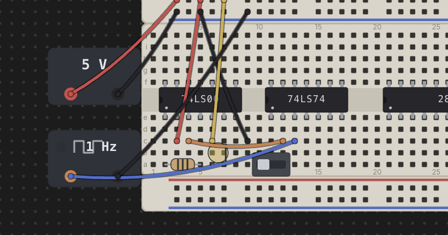

Power & Clock Sources
Every circuit needs somewhere to draw power from and, for sequential parts, a signal to step them along. Chip Hippo gives you two kinds of desk-level bricks for this — a power supply (PSU) and a clock source — neither of which seats on a breadboard. They sit loose on the desk with their own addressable terminals, and you wire those terminals into a board's rails (or straight to a chip's pins) just like any other wire run.

PSU bricks
Add a Power supply from the parts palette (Power group) and drop it
anywhere on the desk — it isn't tied to a board. It draws as a small body with
a voltage badge and two terminal pads: a red + and a black −.
Those pads are addressable wire endpoints, psu1.+ and psu1.- for the
first PSU you place, exactly like a breadboard hole — click-click a wire from
each terminal into a power rail (or directly to a chip's VCC/GND pins) to
energize a circuit.
A PSU has no on/off switch of its own — it's always "live" the moment the simulation is running; what matters is which voltage it's set to and what it's wired into.
Choosing a voltage — and the 12 V damage rule
Right-click a PSU brick to pick its voltage: 3 V, 5 V, or 12 V. The picker stays available even while the simulation is running, so you can change voltage on the fly and watch the effect.
- 5 V — normal operation. A chip whose VCC net carries a 5 V supply and whose GND net is properly grounded runs exactly to its datasheet behavior.
- 3 V — underpowered. The chip is inert — every output floats/reads as if disconnected — but nothing is harmed. Useful for demonstrating what an underpowered chip looks like without any risk.
- 12 V — damage. This is Chip Hippo's "magic smoke" rule: any chip (or oscillator can, which is powered the same way) whose VCC net sees 12 V is immediately marked damaged and goes permanently inert, independent of anything else on the net. Damage is real bookkeeping, persisted with the circuit — it doesn't clear on its own, and it doesn't clear on Stop.
A chip can also come up reversed — a PSU − on its VCC pin's net at the
same time as a PSU + on its GND pin's net — which is reported separately
from plain unpowered/underpowered, since it specifically means the supply
leads are swapped.
Live chip health (powered / underpowered / reversed / damaged) shows as a badge on each chip while running — see Running a Simulation for how those badges and the rest of the settle model work. This page only covers what puts a chip into each state.
Replacing a damaged part
A damaged chip or oscillator can stays damaged and inert until you swap it out. Right-click the damaged part and choose Replace chip (or Replace part for an oscillator can) — this is the one part action that stays available even while the simulation is running, since surviving a burnout and carrying on is exactly the scenario it exists for. Replacing resets the damage flag; everything else about the part (position, wiring, rate) is unchanged.
There's no undo-the-damage option beyond this — 12 V is meant to sting a little, the same way it would on a real bench.
Clock sources
Add a Clock source from the palette (Power group) for a free-running
or manually stepped square wave to drive a sequential chip's clock pin. Like
a PSU, a clock brick is desk-level — it doesn't seat on a board — and exposes
two addressable terminals: out and gnd (clk1.out / clk1.gnd).
Wire out to a chip's clock input and gnd to your circuit's ground.
Right-click a clock brick to set its rate:
- 1 / 2 / 5 / 10 Hz — free-running. Once the simulation is running, the
brick toggles its
outlevel on its own at the chosen rate; a small lamp on the body lights while the output is HIGH. - Manual — click-to-toggle. No timer runs it; instead, while the
simulation is running, clicking the brick's body flips
outfrom LOW to HIGH (or back) once per click — handy for single-stepping a counter or flip-flop by hand and watching each edge land.
The rate picker, like the PSU's voltage picker, stays available while running, so you can retune a clock's speed mid-simulation.
An oscillator can (a discrete part that seats directly on a board rather than as a desk brick) behaves the same electrically — it's a free-running square-wave source powered like a chip, with its own right-click rate picker — but it only ever free-runs; a real crystal has no click-to-toggle pin, so it has no manual mode.
The transport drives the edges
Free-running clocks (and oscillator cans) don't tick on their own outside a
simulation — their edges are driven by the Run/Pause/Step/speed transport
in the header, described fully in
Running a Simulation. Briefly: Run (Space) starts
every free-running clock at its configured rate; Pause freezes them in
place without stopping the simulation; Step advances every free-running
clock by exactly one half-period and re-settles the circuit, useful for
watching a sequential chain edge by edge; and the speed control scales
every free-running clock's rate together (it has no effect on a manual
clock, which only ever moves on a click). A manual clock only responds to
clicks while the simulation is actually running — stopped, its body is inert
like everything else on the desk.
See Wiring, Nets & Buses for how to route power-rail and clock wiring generally, and Running a Simulation for how power state and clock edges feed into the settle model and live views.